Psyched screenshots
Screens from Psyched: Dread vs Reality, version 1.4, a free app where you rate your dread before
an exam, a talk or a tryout, then record how it actually went. You're welcome to use these images
when sharing or writing about the app. Click any image for the full file.
Download all 13 (zip, 1.4 MB)
App Store
Android download
Dread vs reality
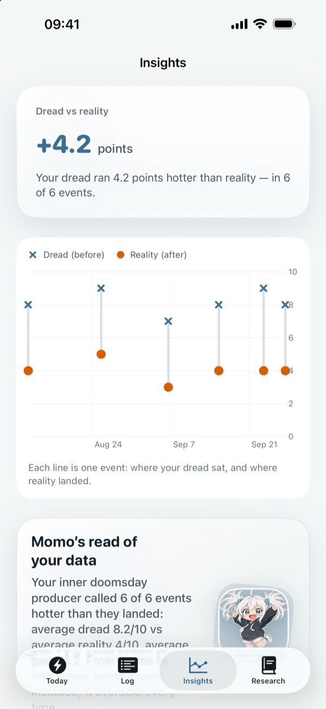
Insights Each line is one event: where the dread sat before, and where reality landed after.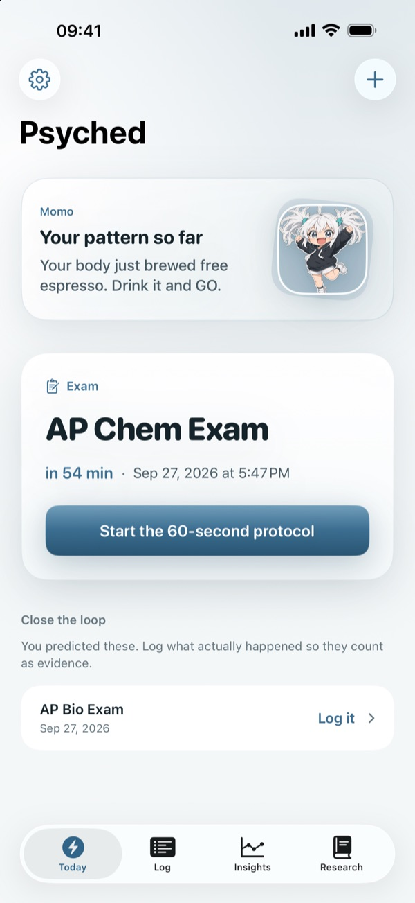
Today An upcoming exam, with a 60-second protocol to run just before it.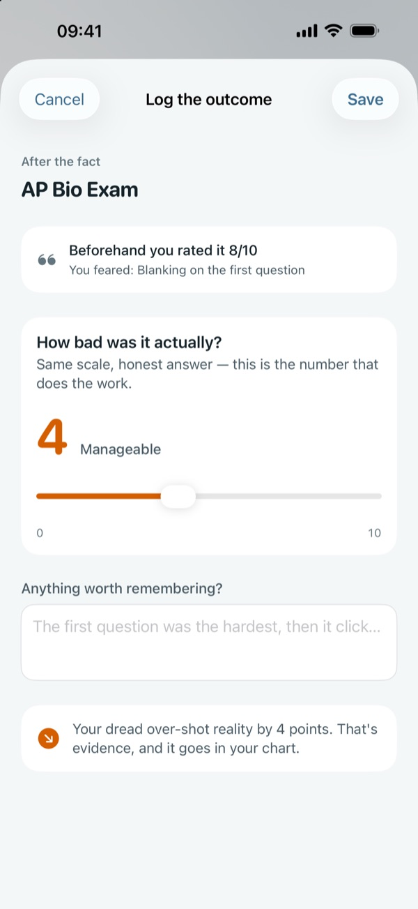
Log the outcome Afterward, the user records how it actually went and sees the gap.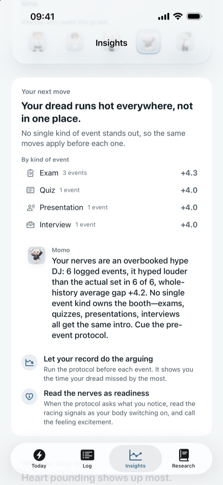
Your next move Where dread runs hottest, by kind of event, with two concrete next steps.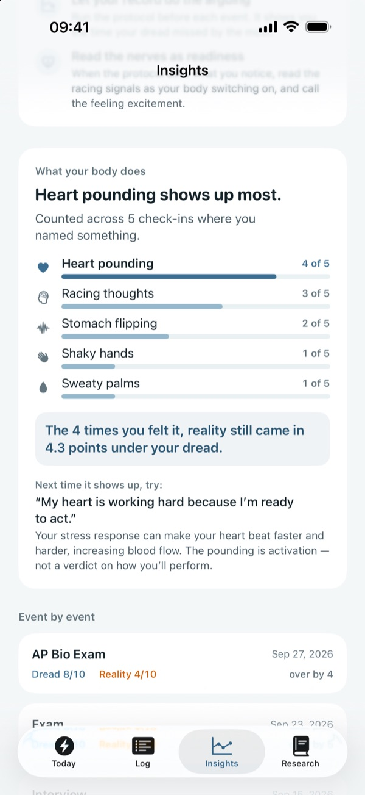
What your body does Which body sensations show up most, and how those events actually went.
The 60-second protocol
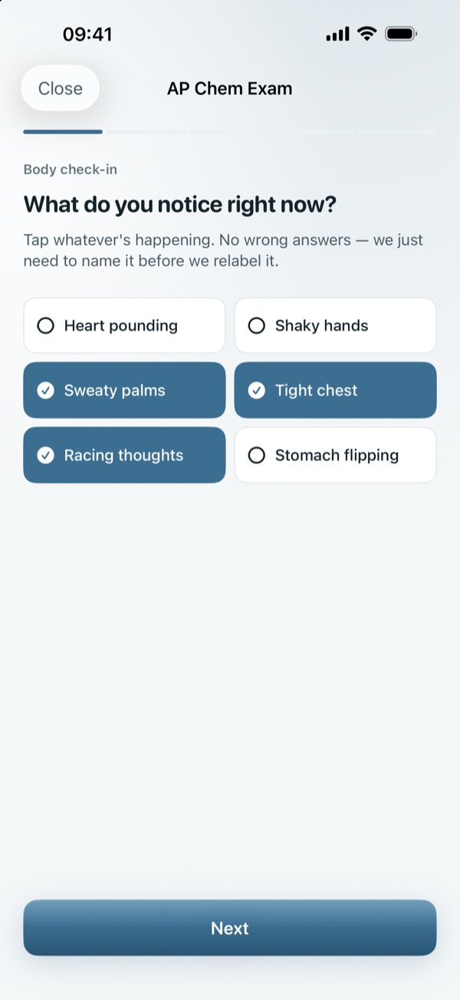
Body check-in Name what the body is doing right now.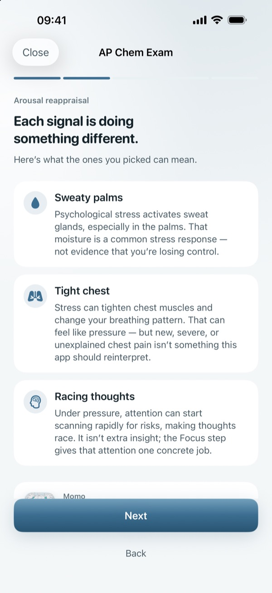
Reading the signals What each of those signals is getting the body ready to do.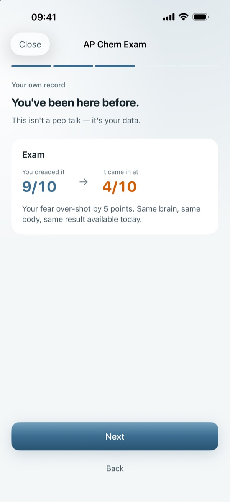
You've been here before The user's own record, shown right before they start.
New in 1.4
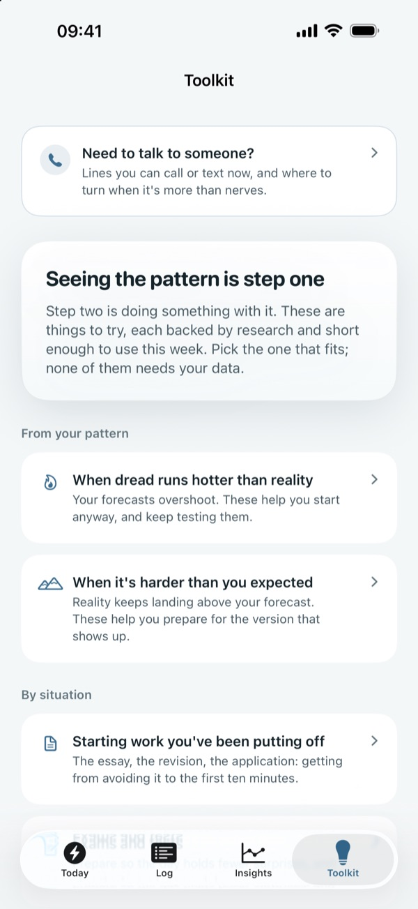
Toolkit Short techniques by situation and by skill, each with the study behind it.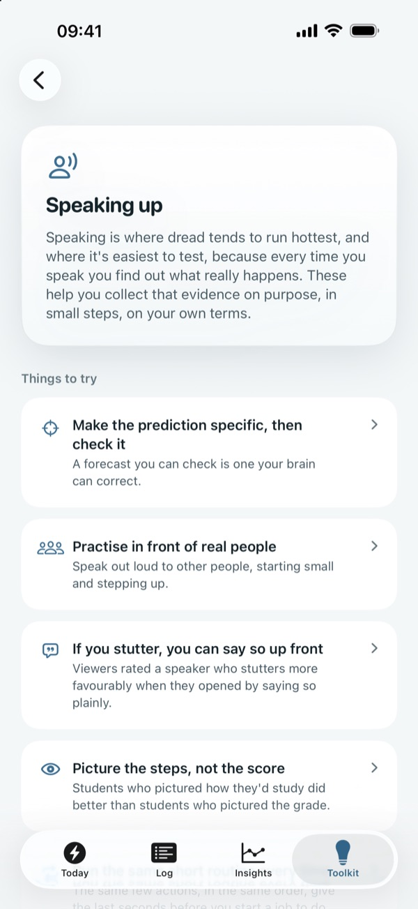
Speaking up Presentations, interviews and answering in class, including for people who stutter.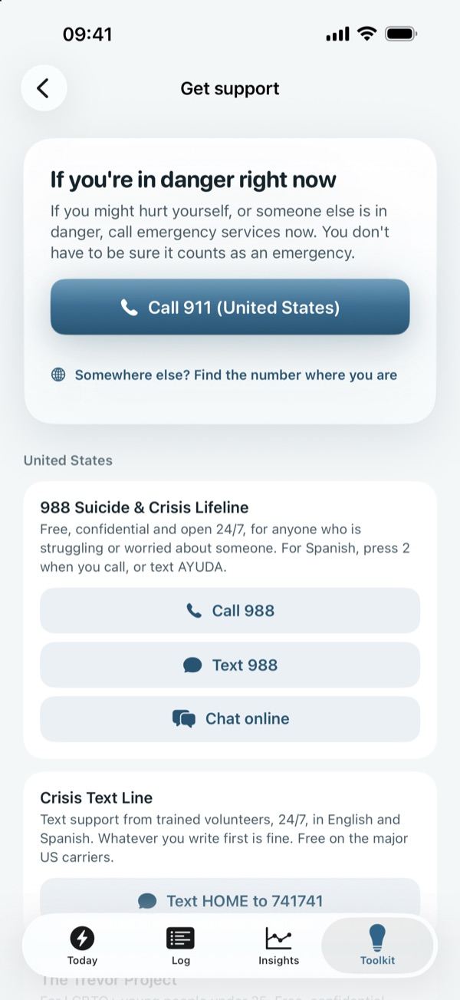
Get support Crisis and support lines for the user's region, with the emergency number first.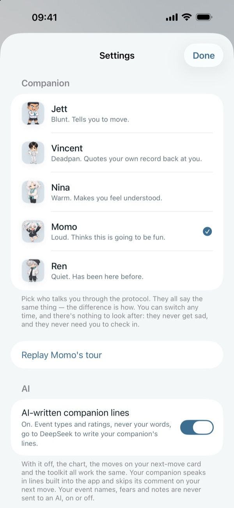
AI switch One switch turns AI-written lines off. Event names, fears and notes are never sent to an AI.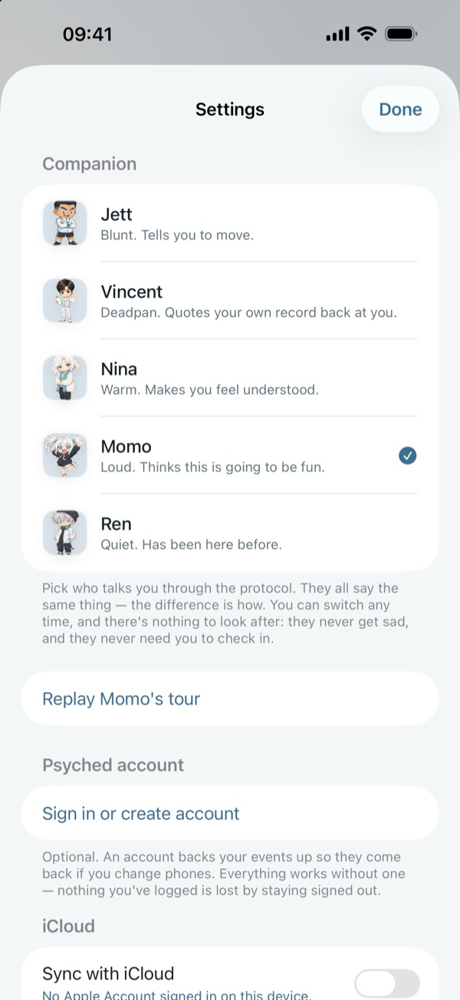
Companions Five personalities to pick from; they all say the same thing in different voices.